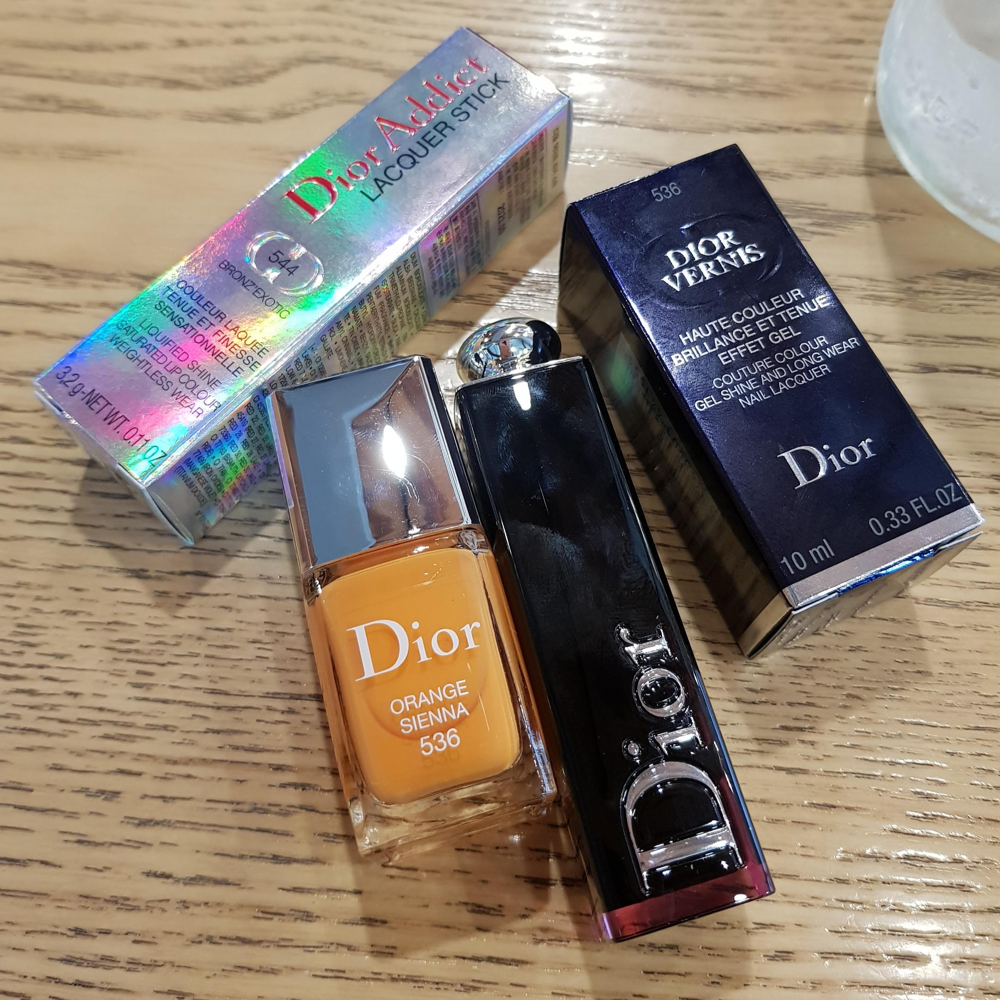
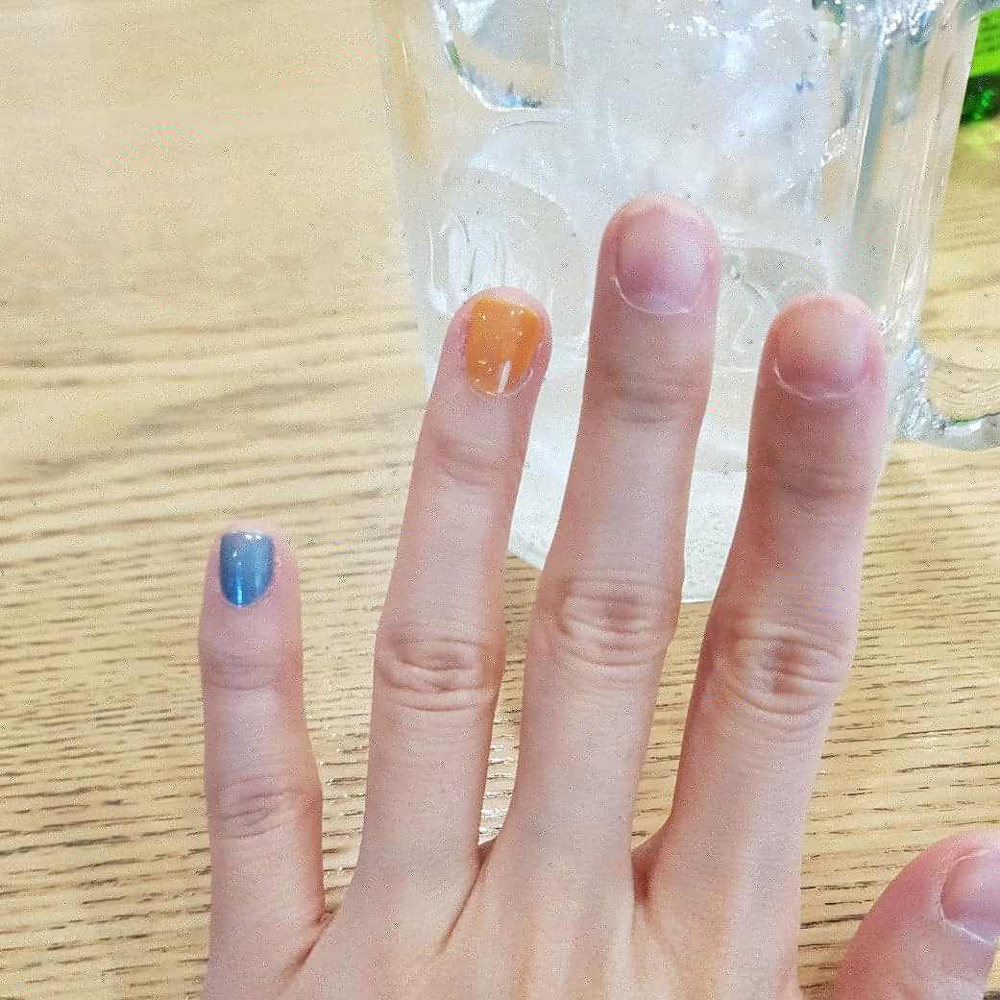
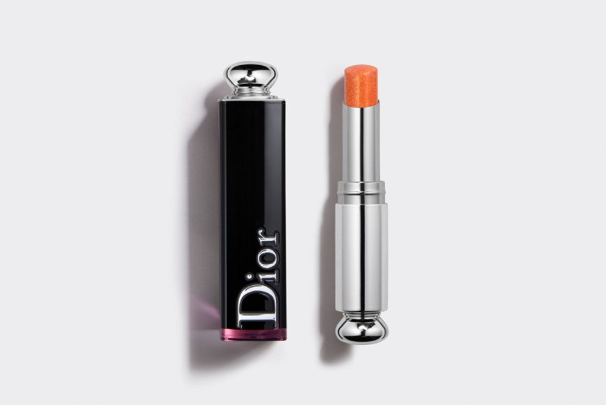
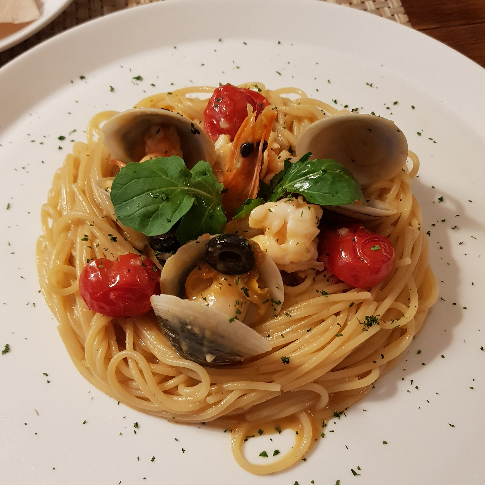

일요일의 충동구매
디올 베르니 536 ORANGE SIENNA
디올 어딕트 라커스틱 544 BRONZE EXOTIC

네일 전혀 안바르면서;;; 근데 너무 예쁜 노랑이라 지나칠수 없었습니당;;
립스틱은 근처에 같이있길래 손등에 발라봤다가 충동구매..........OTL
아직 신상이라 그런가 검색해봐도 잘 안나오네용

요렇게 생겼습니다.
단독으로 바르기보단 풀립 바르고 위에 반짝이 올려주는 용도로 사용하면 예쁠듯 해용 :3
그리고 장염 당첨 ㅡㅡ;;
저번주 월요일부터 몸에 음식만 들어갔다하면 배아프고 화장실갔는데;;
일주일을 내리 버티다가 약국가서 사정설명을 하니 약사분이 '아니 뭐 이런 미련한 인간이....' 란 눈빛으로 절 쳐다봤습니다 ㅋㅋㅋㅋㅋㅋㅋㅋㅋㅋㅋㅋㅋㅋ
고기와 커피를 먹지 말라고 하시네욤;; (고기와 커피만 먹는 인간인데;;;;)

배가아파도 먹고싶은건 먹어야져
장염걸려도 식욕은 줄지 않습니다 ㅋㅋㅋㅋㅋㅋㅋㅋㅋ